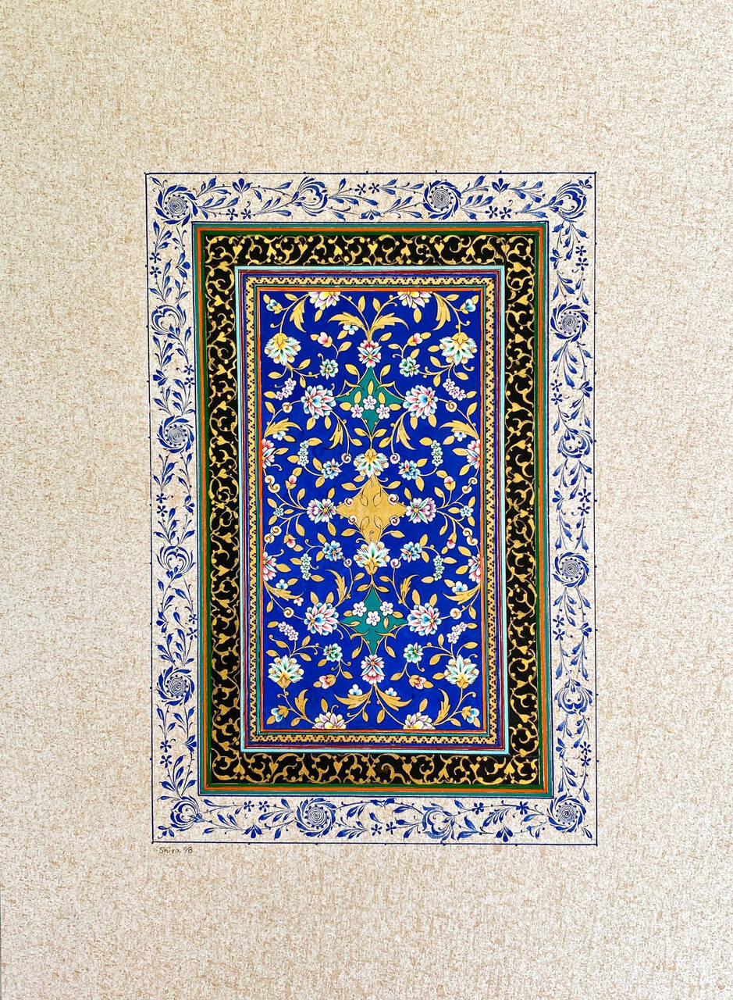

Katibeh
Size: 12.5 * 18.5 cm
Technique:
- Paper
- Gold
- Gouache
- Watercolor
I learnt to use gold on Tazhib with this artwork. I just wanted to learn and the result was satisfying. So I saved it as a sample of early days of learning Tazhib.

Size: 12.5 * 18.5 cm
Technique:
I learnt to use gold on Tazhib with this artwork. I just wanted to learn and the result was satisfying. So I saved it as a sample of early days of learning Tazhib.